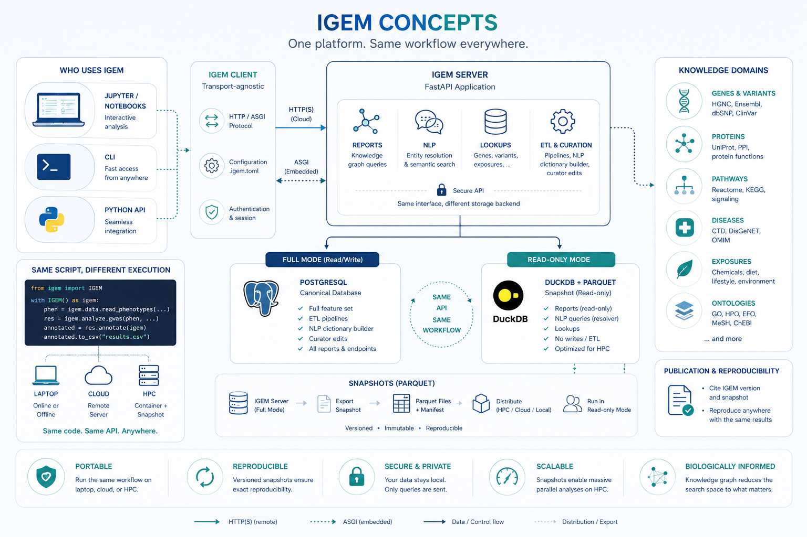

Concepts¶
Three ideas underpin every IGEM workflow. Internalising them up front makes the rest of the documentation — the User Guide, the Operations guide, the API reference — read as variations on a theme rather than a list of independent features.
The client / server / snapshot trio and the two backends it spans.
The filter-then-test loop that turns biological prior knowledge into reduced multiple-testing burden.
The entity model that gives every fact in the knowledge graph the same shape, no matter which domain it comes from.
The client / server / snapshot model¶


The figure encodes four design decisions worth reading separately.
Transport-agnostic client¶
The igem Python package is purpose-built for analyst-side work:
data loading, QC, GWAS / EWAS, interaction tests, plots,
multiple-testing correction. It is intentionally lightweight and
holds no knowledge data of its own.
When a workflow needs the knowledge graph (gene annotations, pathway membership, disease associations, …), the client speaks to a server over one of two transports:
HTTP/HTTPS to a remote
igem-serverinstance — for example the public endpoint athttps://geneexposure.org/api. The natural mode for a laptop or a cloud notebook.ASGI in-process, against an
igem-serverrunning inside the same Python process. The natural mode for HPC nodes that have no outbound network. No port is opened; the call is a local function call masquerading as an HTTP request.
The same line of code (igem.report.gene_annotations(...)) routes
through whichever transport is configured. Switching between them
is a configuration change, not a code change.
Two backends, one API¶
The server side comes in two flavours, and the API surface is identical between them:
Mode |
Storage |
Capabilities |
Where it runs |
|---|---|---|---|
Full |
PostgreSQL |
Reports + NLP + Lookups + ETL + curator edits |
Central institutional deployment |
Read-only |
DuckDB over Parquet |
Reports + NLP queries + Lookups |
Embedded inside the client (HPC, container) |
Full mode is what the curator uses to ingest and update knowledge sources. Read-only mode is what most analysts use, because it collapses to a directory of Parquet files plus a manifest — easy to distribute, easy to mount, contention-free under parallel reads, and trivially reproducible. The client cannot tell the difference.
The snapshot lifecycle¶
A snapshot is a frozen export of the knowledge graph as a set of
versioned Parquet files plus a manifest.json listing every file
and its sha256.
┌─────────────┐ export ┌──────────────────┐ distribute ┌──────────────┐
│ IGEM Server │ ────────▶ │ Parquet Files + │ ───────────▶ │ Read-only │
│ (full mode) │ │ manifest.json │ │ Mode (HPC, │
│ Postgres │ │ versioned · ro │ │ container) │
└─────────────┘ └──────────────────┘ └──────────────┘
Once distributed, a snapshot is immutable: the manifest fixes exactly what is in it, the sha256 hashes catch any corruption or tampering, and any number of analysts can read the same snapshot concurrently with no coordination. Citing a snapshot version in a paper is sufficient for someone else to reproduce the analysis bit-for-bit, given the same client and container versions.
Same script, different execution¶
The most useful consequence of the model: the same Python script
runs unchanged on a laptop pointed at the public server, in a
cloud notebook with embedded mode, or on an HPC node bound to a
shared Parquet snapshot. The only thing that changes is the value
of IGEM_URL (or the equivalent .igem.toml entry).
# This code is unchanged across all three deployments.
from igem import IGEM
with IGEM() as igem:
phen = igem.data.read_phenotypes("nhanes.csv", outcomes=["GLUCOSE"])
res = igem.analyze.ewas(phen, "GLUCOSE")
annotated = res.annotate(igem) # touches the knowledge graph
annotated.to_csv("results.csv")
For the practical recipes that exercise each transport, see Cookbook → Container and HPC workflows.
The end-to-end study workflow¶
IGEM is designed to cover the full lifecycle of an association or interaction study inside a single Python session. Loading, exploration, knowledge-graph lookup, modeling, multiple-testing correction, and figure generation all happen against the same DataFrames, with no glue scripts and no format conversions between stages. The platform supplies the five stages below natively, in the order they are typically executed.
1. Load — efficient I/O for any input size¶
igem.data reads the formats the field actually uses: PLINK 1.x
BED / BIM / FAM, VCF, and phenotype CSV / TSV. Genotype data is
loaded lazily through sgkit and Zarr, so a 50 000-sample
genome-wide dataset opens in seconds and only the columns and rows
you reference are decoded. The same pattern applies to phenotypes —
there is no upper bound on file size, only on what you actually
compute.
2. Explore and clean — descriptive stats, type discovery, transformations¶
igem.describe returns correlations, frequency tables, missingness
reports, skewness, and summary statistics out of the box.
igem.modify covers the preparations you typically need before any
model is fit: automatic categorization of binary / categorical /
continuous variables, outlier removal (IQR or gaussian), z-score
and inverse-rank transformations, recoding, and row / column filters
based on missingness, zero-inflation, or category counts. Type
inference replaces the manual coercion step that many EWAS
pipelines get wrong.
3. Identify entities in the knowledge graph¶
Free-text inputs — gene symbols, phenotype names, chemical synonyms, exposure labels — are resolved to canonical IGEM entities by the server’s NLP module. The same call returns the relationships the entity participates in (gene–pathway, gene–chemical, chemical–disease, exposure–phenotype, …), each carrying a weight and a source identifier so you know why the edge exists (CTD, Reactome, GO, HMDB, …) and how strongly it is supported by the underlying literature. This is the bridge from your raw column names to the biological prior used in the next stage.
4. Test in parallel, with the right model¶
igem.analyze.gwas and igem.analyze.ewas scan candidate features
in parallel and auto-select the regression family — linear,
logistic, multinomial — based on the data type discovered in
stage 2. For interactions, igem.analyze.lrt compares nested versus
full models (with or without the interaction term) and reports the
likelihood-ratio statistic, degrees of freedom, and p-value. The
same parallel infrastructure runs both the main-effect scan and the
interaction scan, so the framework does not change between
association and interaction studies.
5. Correct, visualize, publish¶
Multiple-testing correction is a chained call on the result frame —
res.with_correction("fdr_bh").passing(p_corrected=0.05) — covering
Bonferroni, FDR, and group-wise corrections. Visualization
(Manhattan plots with optional Bonferroni / FDR thresholds,
top-results plots, distribution plots) happens in the same session,
against the same DataFrames, with no export step. The output is a
CSV (or Parquet) ready for supplementary materials, plus figure
files for the manuscript.
The point of cataloguing the lifecycle this explicitly is the contrast it sets up. Every other concept on this page — the client / server / snapshot model above, the filter-then-test loop below, the entity model — exists to make this workflow run cleanly across laptops, clouds, and HPC nodes without changing the script.
The filter-then-test loop¶
Pairwise interaction analysis at biobank scale produces hypothesis counts in the hundreds of millions (The challenge). After Bonferroni or FDR correction, only the strongest effects survive — even when the underlying biology is well established.
IGEM resolves this by inverting the order of operations: it asks the knowledge graph for pairs that are already biologically related, then runs the statistical test only on those candidates. The multiple-testing penalty shrinks proportionally.
Query the graph for the entity relationships you care about — genes in a pathway, genes annotated to a GO term, gene–chemical edges from CTD, exposures with a known link to a disease.
genes = igem.report.pathway_annotations(
input_values=["R-HSA-109581"] # apoptosis
).df["gene_symbol"].tolist()
Restrict your candidate set — pairs of features, single features near a relevant gene, exposures on a curated list — to the entities returned by step 1.
candidates = phen.filter_columns(genes + exposures)
Run the statistical model — GWAS, EWAS, or LRT for interaction terms — on the reduced set, with corrected significance thresholds that reflect the smaller hypothesis space.
sig = (igem.analyze.ewas(candidates, "GLUCOSE")
.with_correction("fdr_bh")
.passing(p_corrected=0.05))
This is the same approach that Biofilter established for gene–gene interactions a decade ago (Bush et al. 2009; Pendergrass et al. 2013). IGEM’s contribution is to extend it to gene–environment (GxE) and exposure–exposure (ExE) interactions, by giving the graph a unified entity model in which gene, exposure, chemical, and disease entities are first-class citizens that can relate to each other.
The alternative — EWAS-driven main-effect filtering — keeps features that show a marginal effect on the phenotype before testing interactions. It works, but it discards exactly the features whose effect only appears in combination with another feature, which is often the biologically interesting case.
The entity model¶
Every fact in the knowledge graph — a gene symbol, a chemical CAS number, a disease ICD code, a pathway, a phenotype, an environmental exposure — is represented as an Entity. Entities are organized in a two-level taxonomy that lets the graph speak about gene–disease, chemical–pathway, and exposure–exposure relationships in a uniform way.
EntityDomain ──→ EntityType ──→ Entity ──→ EntityAlias
(Genomics) (Gene) (TP53) (p53, TRP53, 7157, ...)
(Exposome) (Chemical) (Benzene) (71-43-2, C6H6, ...)
(Knowledge) (Pathway) (Apoptosis) (R-HSA-109581, ...)
The three domains¶
Domain |
What it covers |
Representative entity types |
|---|---|---|
Genomics |
Sequencing-derived: genes, variants, proteins, transcripts, epigenomic marks |
Gene, Variant, Protein, Transcriptomics, Epigenomics |
Exposome |
Environmental, chemical, and clinical: exposures, diseases, phenotypes, metabolites |
Chemical, Disease, Phenotype, Exposome, Metabolomics |
Knowledge |
Biological structures that organize other entities |
Pathway, Gene Ontology |
Aliases and resolution¶
Most entities are known by many names. A gene like TP53 has a preferred HGNC symbol, an Ensembl ID, an Entrez ID, and decades of historical synonyms. The same chemical may be referred to by CAS number, InChI key, MeSH ID, or trivial name.
The graph stores all of these as EntityAlias records pointing back
to a single canonical Entity. The server’s NLP module resolves
free-text or list inputs against the alias index — that is why the
Quickstart’s gene_annotations call accepts plain
HGNC symbols and the server resolves them to the canonical entity
records before joining the metadata.
Cross-domain relationships¶
The payoff of the unified model: a single EntityRelationship table
expresses every biologically relevant connection.
Relationship |
Domain pair |
Example |
|---|---|---|
GxG |
Genomics × Genomics |
Gene ↔ Gene (protein interaction) |
GxE |
Genomics × Exposome |
Gene ↔ Chemical (CTD), Gene ↔ Disease |
ExE |
Exposome × Exposome |
Chemical ↔ Disease (CTD), Phenotype ↔ Disease |
GxK |
Genomics × Knowledge |
Gene ↔ Pathway (Reactome), Gene ↔ GO term |
ExK |
Exposome × Knowledge |
Disease ↔ Pathway, Phenotype ↔ ontology |
The same query mechanism walks any of these edges, which is what makes the filter-then-test loop above work for GxE and ExE — not only the GxG case it was originally defined for.
For the full taxonomy, including the rationale behind the Chemicals-vs-Exposome distinction and the open questions around metabolomics and microbiome classification, see API Reference → Glossary.
What’s next¶
You now have the vocabulary to read any of the three feature guides without surprises:
User Guide — full analytical surface (loading data, QC, GWAS / EWAS, interaction tests, knowledge-graph reports, container and HPC recipes).
API Reference — auto-generated reference for the
igemandigem-serverpackages, plus the glossary.Operations — server setup, ETL pipelines, snapshot generation, container deployment, monitoring.